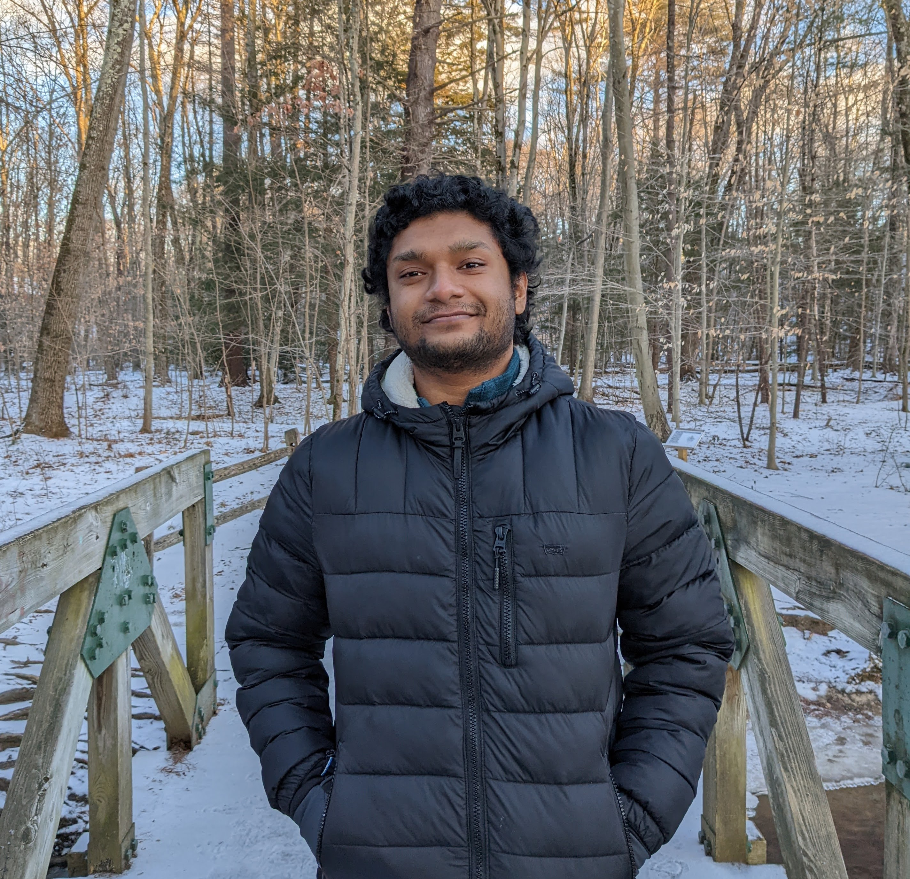

- 
-
Satadal Sengupta (Sata)
Ph.D. Candidate, CS @ Princeton University
M.S. (Research), CSE @ IIT Kharagpur, 2019
B.Tech., CSE @ NIT Durgapur, 2013
Email: firstname.lastname@cs.princeton.edu
Publications
Conferences
- 2019
-
Exploiting Diversity in Android TLS Implementations for Mobile App Traffic Classification
WWW '19 (The Web Conference)
[ Full Paper ] [ ACM ]
-
- 2018
-
HotDASH: Hotspot Aware Adaptive Video Streaming using Deep Reinforcement Learning
ICNP '18 (IEEE International Conference on Network Protocols)
[ Full Paper ] [ Slides ] [ IEEE ]
-
- 2017
-
Leveraging Facebook’s Free Basics Engine for Web Service Deployment in Developing Regions
ICTD '17 (International Conference on Information & Communication Technologies and Development)
[ Full Paper ] [ Slides ] [ ACM ]
-
Candid with YouTube: Adaptive Streaming Behavior and Implications on Data Consumption
NOSSDAV '17 (ACM SIGMM Workshop on Network and Operating Systems Support for Digital Audio and Video)
[ Full Paper ] [ Slides ] [ ACM ]
-
MoViDiff: Enabling Service Differentiation for Mobile Video Apps
IM '17 (IFIP/IEEE International Symposium on Integrated Network Management)
[ Mini-Conf. Paper ] [ Slides ] [ IEEE ]
-
- 2016
-
Inspecting the Free Bridge Across the Digital Divide: Assessing the Quality of Facebook's Free Basics Service
IMC '16 (ACM Internet Measurement Conference)
[ Full Paper ] [ ACM ]
-
- 2012
-
SRSnF: A Strategy for Secured Routing in Spray & Focus Routing Protocol for Delay Tolerant Networks
ACITY '12 (International Conference on Advances in Computing and Information Technology)
[ Full Paper ]
-
- 2011
-
A Qualitative Survey on Multicast Routing in Delay Tolerant Networks
WiMo '11 (International Conference on Wireless & Mobile Networks)
[ Full Paper ] [ Slides ]
-
Journal
- 2016
-
Design of Efficient Lightweight Strategies to Combat DoS Attack in Delay Tolerant Network Routing
WiNe '16 (Springer Journal of Wireless Networks)
[ Full Paper ] [ Springer ]
-
Others
- 2018
-
Magneto: Leveraging Magnetic Field Changes for Inferring Smartphone App Usage
MobiCom '18 Poster (ACM SigMobile MobiCom)
-
- 2017
-
An Empirical Analysis of Facebook's Free Basics
SIGMETRICS '17 Abstract (ACM SIGMETRICS)
[ Abstract ]
-
Predicting Social Dynamics based on Network Traffic Analysis for CCN/ICN Management
COMSNETS '17 PhD Forum (International Conference on Communication Systems and Networks)
-
CommBox: Utilizing Sensors for Real-Time Cricket Shot Identification and Commentary Generation
COMSNETS '17 Demos & Exhibits (International Conference on Communication Systems and Networks)
[ Abstract ]
-
- 2016
-
Prediction of Quality Degradation for Mobile Video Streaming Apps: A Case Study using YouTube
COMSNETS '16 Poster (International Conference on Communication Systems and Networks)
-
Understanding Data Traffic Behaviour for Smartphone Video and Audio Apps
COMSNETS '16 Poster (International Conference on Communication Systems and Networks)
-
Role of Network Control Packets in Smartphone Energy Drainage
COMSNETS '16 Poster (International Conference on Communication Systems and Networks)
-
- 2012
-
Secured Routing in DTNs: Threats & Counter-measures
ICDCN '12 PhD Forum (International Conference on Distributed Computing and Networking)
[ Abstract ]
-
{kind=link}
Awards and Grants
- Research Recognition Awards
Best Academic Demo Award at COMSNETS 2017 held in Bangalore, India.
Best Poster Award at COMSNETS 2016 held in Bangalore, India.
- Travel Grants
WebConf Student Travel Grant for attending The Web Conference (WWW) 2019 in San Francisco, USA.
Microsoft India Student Travel Grant for attending The Web Conference (WWW) 2019 in San Francisco, USA.
ICNP '18 Student Travel Grant for attending IEEE ICNP 2018 in Cambridge, UK.
ACM/IARCS-India Student Travel Grant for attending IEEE ICNP 2018 in Cambridge, UK.
MMSys '17 Student Travel Grant for attending ACM MMSys 2017 in Taipei, Taiwan.
APSys '17 Student Travel Grant for attending ACM SIGOPS APSys 2017 in Mumbai, India.
Professional Experience
- Academic Experience
-
Princeton University, Dept. of Computer Science, Systems Group
Ph.D. Candidate (Advised by: Jennifer Rexford)
Current Position (since September 2019)
-
ETH Zürich, Systems Group, Network Design & Architecture Lab
Research Intern (Advised by: Ankit Singla)
March - August 2019
-
IIT Kharagpur, Dept. of Computer Science & Engineering, CNeRG Group
Research Fellowship & Master's Thesis (Advised by: Sandip Chakraborty, Niloy Ganguly)
May 2015 - February 2019
-
NIT Durgapur, Dept. of Computer Science & Engineering, MCN-RG Group
Bachelor's Thesis (Advised by: Sujoy Saha, Subrata Nandi)
December 2010 - March 2013
-
- Industrial Experience
-
Oracle Financial Services Software Ltd., Bangalore, India
Associate Applications Developer
September 2013 - April 2015
-
Microsoft India R&D Private Ltd., Hyderabad, India
Software Development Engineer Intern, Microsoft IT
May 2012 - July 2012
-
Teaching and Mentorship
- Teaching Experience (as a Teaching Assistant)
-
Computer Networks, IIT Kharagpur
Spring 2018 (Instructed by: Sandip Chakraborty)
Spring 2017 & Spring 2016 (Instructed by: Niloy Ganguly)
-
Performance Modeling of Computer Networks, IIT Kharagpur
Fall 2017 (Instructed by: Sandip Chakraborty)
-
Smartphone Computing and Applications, IIT Kharagpur
Fall 2016 (Instructed by: Niloy Ganguly)
-
- Mentorship Experience
-
Magneto: Leveraging Magnetic Field Changes for Inferring Smartphone App Usage
Internship (Summer 2018), IIT Kharagpur
-
Intelligent Caching based on Social Network Dynamics
Semester Project (Spring 2016, 2017) + Internship (Summer 2016), IIT Kharagpur
-
Sensor-based Cricket Shot Identification and Live Commentary
Semester Project (Fall 2016) [Co-mentored with Sankarshan Mridha], IIT Kharagpur
-
Yes Sir! A Smart Attendance App based on Indoor Localization
Semester Project (Fall 2016), IIT Kharagpur
-
Analysis of Mobile Video Traffic on Various Platforms
Bachelor's Thesis (2015-16), IIT Kharagpur
-
Mobile App Traffic Identification and Service Differentiation
Bachelor's Thesis (2015-16) + Internship (Summer 2016), IIT Kharagpur
-
Impact of Network Control Packets on Energy Drainage in Smartphones
Bachelor's Thesis (2015-16) + Internship (Summer 2016), IIT Kharagpur
-
Extramural Activities
- Philosophy and Psychology
- Learning Foreign Languages
- Riding a Motorcycle
- Humour, Comedy, Improv
- Creative Writing
- Cooking